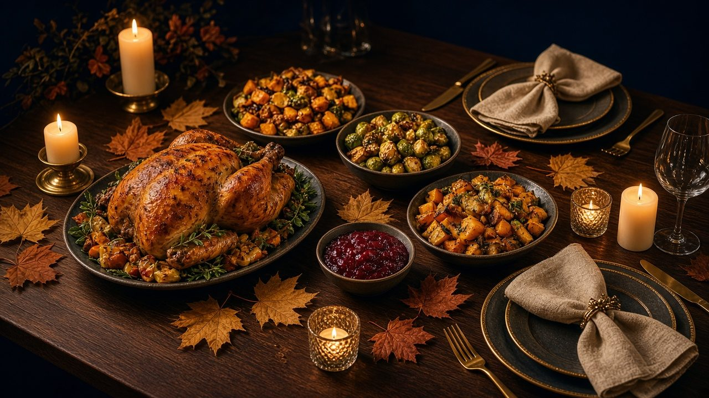
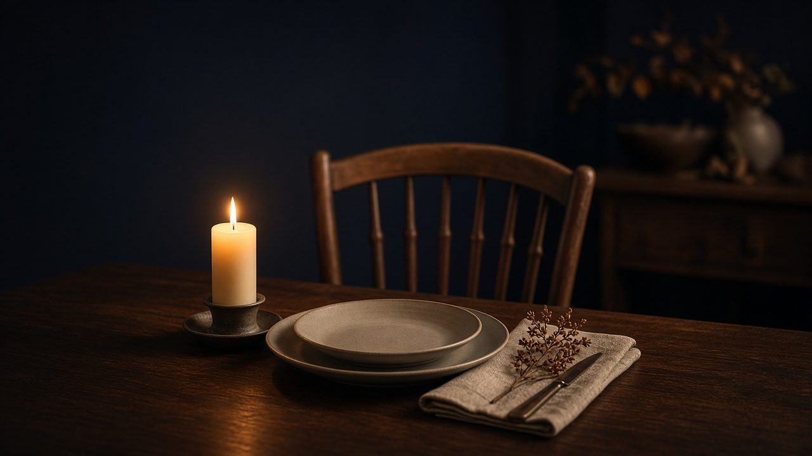

A Thanksgiving message
Happy Thanksgiving
November 26, 2026

Today we are grateful for the tables that are full, and for the families who get to spend this day together, safe and at home. That is a blessing worth naming out loud.
We also hold close the families who are missing someone today. Not every seat is filled. Some loved ones are missing, or were taken, and the people who love them are still waiting. If that is your table this year, you are not forgotten.

The work we do
International Harbor Foundation was founded in 2013 to help locate and recover missing and trafficked people, and to stand with their families. We support the work of building the intelligence and evidence that can bring someone home, the rescue operations that recover them, and the aftercare — safe housing, care, and support — that helps survivors rebuild a life of their own.
Help fund Harbor Safe Ride
Harbor Safe Ride is International Harbor’s program to provide free late-night rides for college students, along with scheduled rides and airport rides. It starts at TCU as a pilot and is meant to expand to campuses across Fort Worth, so no student has to walk home alone at night, or get into a stranger’s car, because there is no other way. If the pilot works here, the plan is to take Harbor Safe Ride to campuses beyond Fort Worth, one campus at a time.
A gift to this campaign supports Harbor Safe Ride and the foundation’s work to find people, bring them home, and stay with them afterward. If you can give, please do. If you can share this page, that helps too.
DonateWith gratitude,
The International Harbor volunteer board
International Harbor Foundation